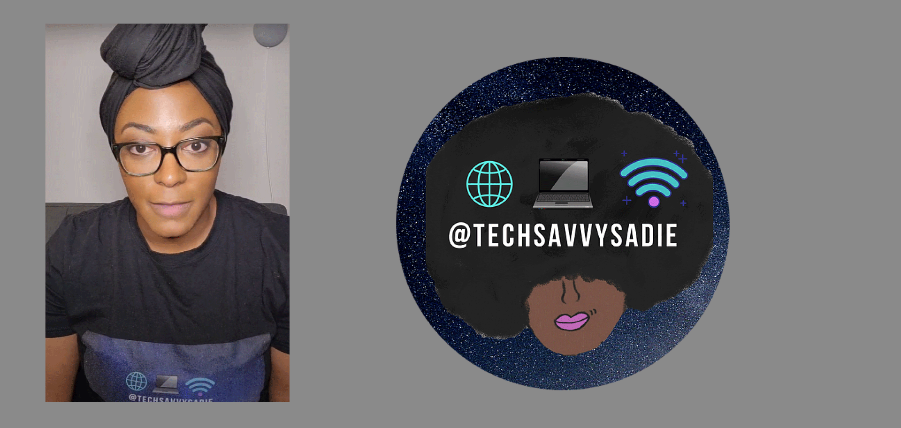

Tech Savvy like Mersedes Henderson


The voice of women like Mersedes Henderson is as important as the voice of big tech CEOs and Investors. This is one of the things that the greyio experiment is willing to prove by writing about women in tech and I will not only be publishing cheaps words but will also use my quantitative skills to illustrate my points with numbers. But numbers are not so important when we start and that’s what I was willing to say to techsavvysadie who just started to speak and publish her amazing journey into the tech industry on youtube. She just started a few months ago and like how all these YouTubers who now get millions of followers started she has few people like me who watch and listen to her and this is enough for her to stay committed because they are millions of people like me who could benefit from her experience made public.
Linux is an operating system that really contributed to the development of the internet and of enterprise information systems because most server infrastructure use this operating system which benefits from the wisdom of the crowd by succeeding at grouping many skilled software engineers committed to working for free for the sake of building a great free operating system. Then if people like Mercesdess .. are talking about this operating system they are contributing like all these programmers who produced code for the kernel of this OS.
it has been just 3 weeks that Mersedes Henderson started sharing about her shift and commitment to get into the tech industry and hope that like me you will follow her journey. In the beginning, stress and anxiety are always around, and seeing others engage themselves with what we do could for sure minimize their effects but committing to do what we seek to do with consistency no matter what the outputs are is their best minimizer. I do believe that with Consistency the result we seek almost always comes.
Quitting a job for shifting to another industry is a huge decision and I know well about that because years ago I quitted my job at a big bank for entrepreneurship and since then I have failed a lot and questioned myself a lot about if it was the right decision to skip those sure recurring revenues that I was getting by working as an employee. There are many open topics that a tech savvy person like you and Mersedes could go into and contribute with cheap words like I am doing or a video like the one below
Please don't give up techsavvysadie because when we begin we often seek out facts like numbers that could convince us that we are doing the right things but these are not the gaol. The goal is to show up and contribute with our words, voice, and skills like what I am doing by writing this 37th article of the Greyio Heart Experiment which is again about women doing things in tech that catch my eyes, mind, and heart as a contribution like what software engineers have done with the Linux kernel, doing works that matter for without being paid.